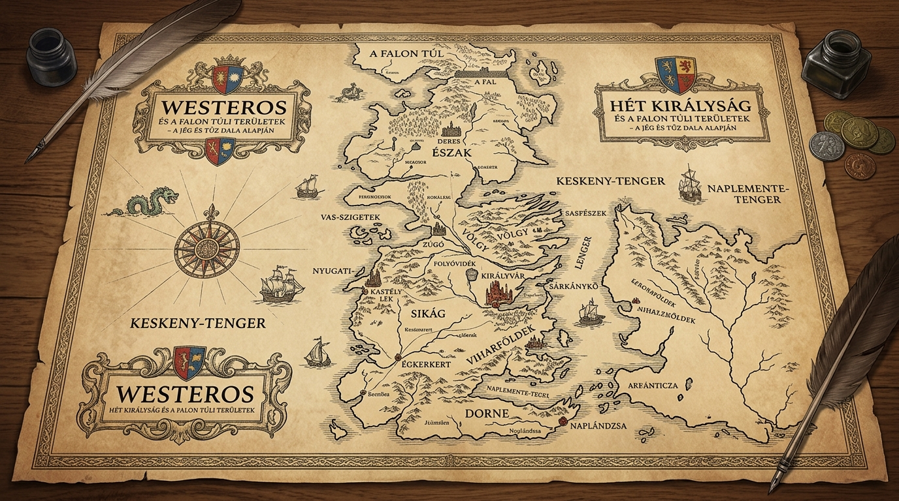
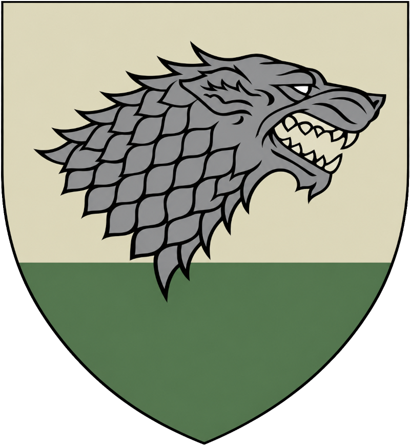
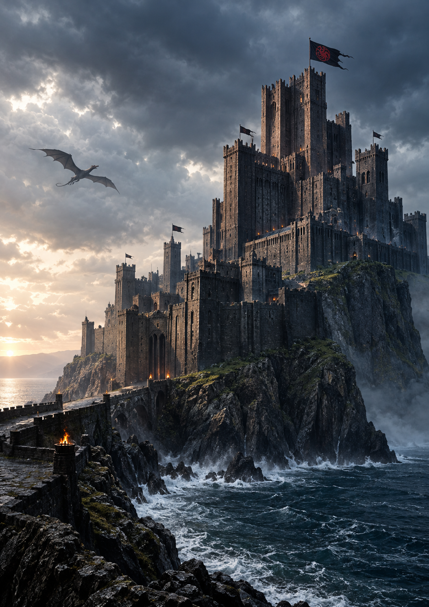

A Trónok harca nagy házai
Westeros története röviden
A Trónok harca világa egy összetett, középkori hangulatú fantasyuniverzum, amelyben a nemesi családok meghatározó szerepet töltenek be. Westeros földjén számos nagy ház küzd a hatalomért, a befolyásért és a fennmaradásért. Ezek a családok hosszú múltra visszatekintő hagyományokkal, saját jelképekkel és egyedi értékrenddel rendelkeznek. A házak tagjainak döntései nemcsak saját sorsukat, hanem egész királyságok jövőjét is befolyásolhatják. A köztük kialakuló kapcsolatok, szövetségek és ellentétek a történet meghatározó elemeit alkotják.
A nagy házak mindegyike különleges helyet foglal el Westeros társadalmi és politikai rendszerében. Hatalmuk alapját a birtokaik, a hozzájuk hű emberek és a rendelkezésükre álló erőforrások jelentik. A családok vezetői fontos szerepet játszanak a királyság irányításában és a különböző konfliktusok alakításában. A nemesi rang és a családi származás meghatározza az egyes szereplők lehetőségeit és társadalmi helyzetét. A nagy házak története egyben a kontinens múltjának és jelenének története is.
A családi hagyományok és az örökség különösen fontosak ebben a világban. A nemzedékeken át továbbadott értékek meghatározzák a családtagok gondolkodását és viselkedését. A házak neve gyakran összefonódik bizonyos tulajdonságokkal, elvárásokkal és történelmi eseményekkel. A család becsületének megőrzése sokszor legalább olyan fontos, mint az egyéni boldogulás. Ugyanakkor a hagyományok követése és a személyes érdekek érvényesítése között gyakran feszültség alakul ki.
A nagy házak közötti viszonyokat a politikai érdekek és a személyes kapcsolatok egyaránt formálják. A szövetségek létrehozása fontos eszköz a hatalom megszerzésében és megtartásában. A házasságok, az ígéretek és a különböző megállapodások a politikai stratégia részét képezik. A bizalom és a hűség értékes, ugyanakkor gyakran próbára tett tulajdonságok ebben a környezetben. Egyetlen döntés is jelentős változásokat idézhet elő a családok közötti erőviszonyokban.
A nagy házak nem csupán politikai szereplők, hanem a történet erkölcsi és emberi kérdéseinek hordozói is. Tagjaik különböző célokkal, személyiségekkel és elképzelésekkel rendelkeznek. A hatalom iránti vágy, a kötelességtudat, a becsület és a család iránti elkötelezettség gyakran egymással ellentétes irányba vezeti őket. A szereplők döntései rávilágítanak arra, milyen nehéz egyensúlyt teremteni az egyéni érdekek és a közösség elvárásai között. Ez a sokszínűség teszi a házakat a történet összetett és emlékezetes részeivé.
A Trónok harca nagy házainak megismerése segít jobban megérteni Westeros világának felépítését és működését. A családok közötti kapcsolatok áttekintése képet ad a kontinens politikai viszonyairól és társadalmi rendjéről. A házak jelképei, hagyományai és értékei hozzájárulnak a történet egyedi hangulatának kialakításához. Bár mindegyik család más módon viszonyul a hatalomhoz és a kötelességhez, sorsuk szorosan összekapcsolódik. A nagy házak története így a hűség, a becsület, az örökség és a hatalom örök kérdéseit állítja a középpontba.

1. A Stark-ház
1.1. Történelmi háttér és székhely
A Stark-ház Észak egyik legrégebbi és legtekintélyesebb nemesi családja Westerosban. Székhelyük Deres, angol nevén Winterfell, amely a zord északi vidék politikai központja. A család eredete az Első Emberek koráig nyúlik vissza, amikor a legenda szerint az Építő Brandon megalapította Derest. A Starkok hosszú időn át Észak királyaiként uralkodtak, mielőtt meghajoltak volna a Targaryen-hódítás előtt. Évszázadokon keresztül megőrizték saját hagyományaikat és különleges északi identitásukat.
Deres hatalmas erődítmény, amelyet úgy építettek, hogy a hosszú teleket és a súlyos ostromokat is átvészelje. A vár alatt természetes forró vizű források húzódnak, amelyek melegítik az épületeket a hideg hónapokban. A Starkok birtokai rendkívül kiterjedtek, ezért az északi nemesek jelentős része nekik tartozik hűséggel. Az északi tájakon a család tekintélyét nem pusztán katonai ereje, hanem régi szokásai és személyes becsülete is megalapozza. A család története szorosan összefonódik a Falon túli fenyegetésekkel és az Éjjeli Őrség hagyományaival.
A történet elején Eddard Stark Deres ura és Észak egyik legfontosabb vezetője. Felesége, Catelyn Tully, öt gyermekük nevelésében és a család politikai kapcsolatainak alakításában is meghatározó szerepet játszik. Robb, Sansa, Arya, Bran és Rickon eltérő személyiségekkel rendelkeznek, ezért a család jövője több lehetséges irányba fejlődhet. Jon Snow, Eddard törvénytelen fiaként nevelkedik, és később az Éjjeli Őrségben találja meg saját útját. A Starkok sorsa fokozatosan összekapcsolódik a Vastrónért folytatott küzdelemmel és az egész kontinenst fenyegető veszéllyel.
1.2. Jelképek, jelmondat és családi értékek
A Stark-ház címere egy szürke rémfarkast ábrázol fehér mezőben. A rémfarkas az északi vadonhoz, az állhatatossághoz és a családhoz való hűséghez kapcsolódik. A Stark-gyermekek mindegyike saját rémfarkast kap, amely jelképes kapcsolatot teremt közöttük és az északi természet között. Ezek az állatok a történet során gyakran tükrözik gazdáik személyiségét és sorsát. A címer egyszerre fejezi ki a család erejét, magányosságát és az északi vidékhez fűződő mély kapcsolatát.

A ház jelmondata: „Közeleg a tél”, amely eredeti angol formájában „Winter is Coming”. Ez a mondat nem csupán az évszakok változására utal, hanem arra is figyelmeztet, hogy a veszélyekre mindig fel kell készülni. A Starkok szerint a hatalom és a gazdagság kevésbé fontos, mint a kötelesség és a túlélés. A családfők hagyományosan maguk hajtják végre az ítéleteket, mert úgy tartják, hogy aki ítélkezik, annak vállalnia kell döntései súlyát. Ez az elv Eddard Stark személyiségében különösen erősen jelenik meg.
A család legfontosabb értékei közé tartozik a becsület, a családi összetartás és a felelősségvállalás. A Starkok sokszor akkor is ragaszkodnak elveikhez, amikor ezzel politikai hátrányba kerülnek. Ez a tulajdonság erkölcsi szempontból tiszteletre méltó, ugyanakkor veszélyessé is válhat egy megtévesztésre épülő udvari világban. A családtagok nem mindig értenek egyet abban, hogyan kellene megvédeniük egymást. A Starkok története ezért azt is bemutatja, milyen nehéz összeegyeztetni az erkölcsi tisztaságot a politikai túléléssel.
1.3. Szerepük a történetben
A Starkok a történet elején viszonylag békés és rendezett életet élnek Deresben. Eddardot azonban Robert Baratheon király a fővárosba hívja, hogy elfoglalja a Király Segítője tisztséget. A döntés következtében a család belekeveredik a királyi udvar intrikáiba és az öröklési konfliktusokba. Eddard megpróbálja feltárni a királyi család titkait, de őszintesége és politikai tapasztalatlansága végzetesnek bizonyul. Halála után a Starkok helyzete drámaian megváltozik, és a család tagjai szétszóródnak Westerosban.
Robb Stark Észak királyává koronáztatja magát, és háborúba indul a Lannisterek ellen. Kezdeti sikerei ellenére politikai hibái és a szövetségi rendszer megbomlása súlyos következményekhez vezetnek. A Vörös Nász során Robb, Catelyn és számos északi szövetséges életét veszti. Eközben Arya önálló túlélővé válik, Sansa megtanul eligazodni a politikai manipulációk között, Bran pedig természetfeletti képességei felfedezésének útjára lép. Jon Snow a Falnál és azon túl egyre nagyobb szerepet kap az emberiséget fenyegető veszélyek elleni küzdelemben.
A későbbi események során a Starkok túlélő tagjai fokozatosan visszatérnek Északra, és megpróbálják helyreállítani családjuk hatalmát. Jon és Sansa fontos szerepet játszanak Deres visszafoglalásában a Boltonoktól. Arya és Bran sajátos képességeikkel, illetve tapasztalataikkal járulnak hozzá a család jövőjéhez. A Starkok története végül nem egyszerűen a hatalom visszaszerzéséről szól, hanem az identitás és a családi örökség megőrzéséről is. A ház az északi függetlenség és a kötelességtudat egyik legfontosabb jelképe marad.
2. A Lannister-ház
2.1. Történelmi háttér és székhely
A Lannister-ház Westeros egyik leggazdagabb és legbefolyásosabb nemesi családja. Székhelyük Kaszter-hegy, amely angolul Casterly Rock néven ismert, és a Nyugat egyik legjobban védhető erődítménye. Hatalmuk alapját elsősorban a területükön található aranybányák és a kereskedelemből származó bevételek jelentik. A család ősei a régi legendák szerint Lann, a Ravasz leszármazottai, aki eszével és fortélyaival szerezte meg a hegyet. A Lannisterek gazdagsága évszázadokon keresztül lehetővé tette számukra, hogy nagy hadseregeket tartsanak fenn és komoly befolyást gyakoroljanak a királyi udvarra.
A család a Targaryen-hódítás után is megőrizte jelentős politikai súlyát. A Lannisterek gyakran házasságokkal, pénzügyi támogatással és stratégiai szövetségekkel erősítették helyzetüket. A történet kezdetén Tywin Lannister a család feje, akit Westeros egyik legkíméletlenebb és legtehetségesebb politikusaként tartanak számon. Felesége, Joanna halála után Tywin még inkább a családi tekintély és az örökség megőrzésének szenteli életét. Gyermekeitől azt várja, hogy döntéseikkel a család hosszú távú hatalmát szolgálják.
A Lannisterek három legismertebb gyermeke Jaime, Cersei és Tyrion, akik különböző módon viszonyulnak apjuk elvárásaihoz. Jaime kiváló kardforgató, akinek életét meghatározza a Királyi Testőrséghez és Cerseihez fűződő kapcsolata. Cersei a királyi udvarban igyekszik megszerezni és megtartani a hatalmat, miközben saját gyermekeinek érdekeit helyezi előtérbe. Tyrion rendkívüli intelligenciával rendelkezik, de családja gyakran lenézi testi adottságai és szokatlan életfelfogása miatt. A három testvér története jól mutatja, hogy a gazdagság és a magas származás önmagában nem garantálja a családi boldogságot.
2.2. Jelképek, jelmondat és családi értékek
A Lannister-ház címere egy arany oroszlán vörös mezőben. Az oroszlán a hatalmat, a büszkeséget, a bátorságot és a ragadozó természetet jelképezi. A vörös háttér a család harcias fellépésére és a hatalomért folytatott küzdelmeire is emlékeztethet. Az arany szín egyúttal a gazdagságra és a család anyagi fölényére utal. A címer a királyság egyik legismertebb jelképe, amelyet a Lannisterek katonái és támogatói messziről felismernek.

A ház hivatalos jelmondata: „Halld az üvöltésem!”, angolul „Hear Me Roar!”. A családhoz azonban még szorosabban kötődik a mondás, amely szerint a Lannister mindig megfizeti az adósságait. Ez a kijelentés egyszerre jelent pénzügyi megbízhatóságot, politikai fenyegetést és a megtorlás ígéretét. A Lannisterek rendszerint emlékeznek arra, ki segítette vagy sértette meg őket, és később igyekeznek ennek megfelelően cselekedni. A családi hírnév fenntartása számukra sokszor fontosabb, mint az egyéni boldogság vagy a megbocsátás.
A Lannisterek legfontosabb értékei közé tartozik a családi tekintély, a vagyon és a politikai befolyás megőrzése. Tywin úgy gondolja, hogy a családnak minden körülmények között erősnek kell mutatkoznia, mert a gyengeséget ellenségei kihasználják. Ez a gondolkodásmód gyakran könyörtelen döntésekhez és mások szenvedésének figyelmen kívül hagyásához vezet. Cersei hasonlóan fontosnak tartja a hatalmat, de döntéseit gyakran személyes félelmei és érzelmei irányítják. Tyrion ezzel szemben sokszor humorral, öniróniával és éleslátással próbálja túlélni családja rideg világát.
2.3. Szerepük a történetben
A Lannisterek a sorozat elején a királyi udvar egyik legmeghatározóbb családját alkotják. Cersei Robert Baratheon király felesége, miközben titkos kapcsolatot tart fenn ikertestvérével, Jaime-mel. Gyermekeik származása a trónöröklés szempontjából kulcsfontosságú titok, amely komoly politikai válságot idéz elő. Eddard Stark felismeri a titok jelentőségét, és megpróbálja feltárni az igazságot, ezzel közvetlenül szembekerülve a Lannisterek érdekeivel. A konfliktus Robert halála után nyílt hatalmi harccá alakul, amelyben a család jelentős katonai és pénzügyi előnyeit is felhasználja.
Tywin vezetésével a Lannisterek háborút vívnak a Starkok és más ellenfelek ellen. Jaime fogságba esik, Tyrion pedig több alkalommal bizonyítja, hogy katonai és politikai helyzetekben is kivételes képességekkel rendelkezik. A feketevízi csatában Tyrion kulcsszerepet játszik Királyvár megvédésében Stannis Baratheon támadásával szemben. Tywin később megszilárdítja a család befolyását, és fontos szerepet vállal a királyi házasságok, illetve szövetségek alakításában. A Vörös Nász megszervezésében játszott szerepe megmutatja, hogy a család érdekében a hagyományos lovagi erkölcsöt is félre tudja tenni.
Tywin halála után a Lannisterek hatalma fokozatosan meggyengül, mert a családtagok közötti bizalmatlanság és a rossz politikai döntések egyre súlyosabb következményekkel járnak. Cersei megpróbálja egyedül irányítani a királyságot, de ellenségei és saját hibái fokozatosan elszigetelik. Jaime egyre inkább megkérdőjelezi a családi kötelesség és a személyes becsület közötti ellentmondást. Tyrion elhagyja Westerost, majd Daenerys Targaryen tanácsadójaként tér vissza a hatalmi küzdelembe. A Lannisterek története azt mutatja be, hogyan válhat a gazdagság és a politikai ügyesség önpusztítóvá, ha a családi egységet félelem és könyörtelenség helyettesíti.
3. A Targaryen-ház
3.1. Történelmi háttér és székhely
A Targaryen-ház egy ősi valyriai eredetű dinasztia, amelynek története szorosan összefonódik a sárkányokkal. A család Valyria pusztulása előtt elhagyta ősi hazáját, és Sárkánykő szigetén telepedett le. A dinasztia egyik legjelentősebb uralkodója, Aegon Targaryen, a hódítás során sárkányai segítségével egyesítette Westeros nagy részét. A Targaryenek több mint két évszázadon keresztül uralkodtak a Hét Királyság felett. Hatalmuk alapját a sárkányok katonai fölénye, a dinasztikus házasságok és a királyi intézmények ellenőrzése jelentette.
A család hagyományos központja Sárkánykő, de a hódítás után a királyi udvar Királyvárba költözött. A Targaryen-uralkodók idővel elveszítették sárkányaik jelentős részét, és a sárkányok eltűnésével a dinasztia katonai fölénye is csökkent. A család történelmét belső viszályok, öröklési háborúk és kegyetlen hatalmi harcok tarkítják. A sárkányok táncaként ismert polgárháború különösen súlyos veszteségeket okozott a dinasztiának és az országnak. A Targaryenek múltja ezért egyszerre szól a rendkívüli hatalom megszerzéséről és annak fokozatos elvesztéséről.
A sorozat kezdetén a dinasztia uralma már véget ért, miután Robert Baratheon lázadása megdöntötte II. Aerys király hatalmát. A királyi család több tagját megölték, míg Viserys és húga, Daenerys száműzetésben próbálták megőrizni a dinasztia örökségét. Viserys a trón visszaszerzéséről álmodik, és húgát politikai házasság révén próbálja felhasználni céljai elérésére. Daenerys kezdetben kiszolgáltatott helyzetben él, de később saját hatalmat és követőket szerez. Története a családi örökség, az önállóság és az uralkodói felelősség kérdéseit állítja középpontba.
3.2. Jelképek, jelmondat és családi értékek
A Targaryen-ház címere háromfejű fekete sárkány vörös mezőben. A három fej a dinasztia történetében a sárkányok erejét és a család uralkodói örökségét jelképezi. A sárkányok nemcsak katonai eszközök, hanem a Targaryen-hatalom és a valyriai származás szimbólumai is. A vörös és fekete színek látványos, fenyegető megjelenést kölcsönöznek a címernek. A sárkány motívuma a család történetében egyszerre kapcsolódik a teremtő erőhöz, a pusztításhoz és az uralkodói kiváltsághoz.

A ház jelmondata: „Tűz és vér”, angolul „Fire and Blood”. Ez a mondat a dinasztia harcias természetét és a trón megszerzéséért vállalt áldozatokat fejezi ki. A Targaryenek hagyományosan különlegesnek tekintik saját vérvonalukat, és történelmük során gyakran kötöttek házasságot közeli rokonaikkal. E szokás célja a valyriai örökség és a sárkányokhoz fűződő kapcsolat megőrzése volt. Ugyanakkor a család története arra is figyelmeztet, hogy a kiválasztottságba vetett hit könnyen vezethet önkényhez és túlzott büszkeséghez.
A Targaryen-örökség fontos része a sárkányok iránti különleges kapcsolat és a rendkívüli uralkodói ambíció. A család tagjai gyakran úgy tekintenek magukra, mint akiknek történelmi küldetésük van Westeros irányítására. Ez a meggyőződés azonban nem minden esetben párosul bölcsességgel vagy önuralommal. Egyes Targaryenek igazságos és előrelátó uralkodók, mások kegyetlenek vagy kiszámíthatatlanok.
3.3. Szerepük a történetben
Daenerys Targaryen története a száműzetésből indul, majd fokozatosan a hatalom megszerzésének és a felszabadításnak az útjává válik. Házassága Khal Drogóval kezdetben politikai alku, de idővel önálló vezetővé fejlődik. Három sárkány születésével visszatér a világba a Targaryen-dinasztia egykori legnagyobb ereje. Daenerys rabszolgákat szabadít fel, hadseregeket gyűjt, és egyre nagyobb követőtábort szerez. Célja végül az lesz, hogy visszatérjen Westerosba, és elfoglalja az őt megilletőnek tekintett Vastrónt.
Daenerys mellett Jon Snow története is a Targaryen-örökséghez kapcsolódik. Jon valódi származása feltárulásakor kiderül, hogy apja Rhaegar Targaryen, anyja pedig Lyanna Stark, így a fiú a két nagy ház örökségét egyesíti. Ez a titok politikai és személyes következményekkel jár, mert Jon jogigénye veszélyeztetheti Daenerys trónigényét. A két szereplő kapcsolata a szerelem, a kötelesség és a legitim uralkodás közötti feszültséget jeleníti meg. A Targaryen-vérvonal kérdése így nemcsak a múlt feltárását, hanem Westeros jövőjének meghatározását is szolgálja.
A sorozat végéhez közeledve Daenerys hatalomgyakorlása egyre ellentmondásosabbá válik. Westeros meghódításáért folytatott háborúja során a felszabadítás eszméje fokozatosan összekapcsolódik a könyörtelen megtorlással és a korlátlan uralom igényével. Királyvár pusztulása után Jon és más szereplők szembesülnek azzal, hogy a dinasztikus jogosultság önmagában nem tesz valakit jó uralkodóvá. A Targaryen-történet lezárása a hatalom erkölcsi korlátaira és a személyes felelősségre irányítja a figyelmet. A család öröksége mégis meghatározó marad Westeros történelmében, kultúrájában és politikai képzeletében.
4. A Baratheon-ház
4.1. Történelmi háttér és székhely
A Baratheon-ház a Viharvidék egyik meghatározó nemesi családja, amely a Targaryen-dinasztia bukása után Westeros uralkodóházává vált. A család székhelye Viharvég, egy hatalmas erődítmény, amelyet a legenda szerint Durran, a Viharok királya alapított. A Baratheonok történelmi felemelkedésében fontos szerepet játszottak a Targaryenekhez fűződő rokoni kapcsolatok. A család legismertebb tagja Robert Baratheon, aki a lázadás során legyőzte II. Aerys király uralmát. Robert győzelme után elfoglalta a Vastrónt, és új dinasztiát alapított a királyság élén.
A ház három legismertebb tagja Robert, valamint két öccse, Stannis és Renly. Robert a háborúban kiváló harcosnak bizonyult, de királyként egyre kevésbé érdekelte az állam irányítása. Stannis szigorú, kötelességtudó és hajthatatlan ember, aki a törvényes öröklési rendet minden személyes érdek elé helyezi. Renly ezzel szemben népszerű, megnyerő és ügyes politikus, aki sok nemest képes maga mellé állítani. A testvérek közötti különbségek hamarosan komoly konfliktusokat idéznek elő a családon belül.
A Baratheonok birtokai közé tartozik Viharvég, míg Robert uralkodása alatt a család a királyi hatalom központjában is meghatározó szerepet játszik. A ház helyzete azonban ingataggá válik, amikor Robert halála után felmerül gyermekei valódi származásának kérdése. A törvényes öröklés bizonytalansága több trónkövetelőt hoz létre, és polgárháborúhoz vezet. Stannis és Renly egyaránt saját igényét tartja jogosnak, miközben a királyság más nagy házai is beavatkoznak a konfliktusba. A Baratheonok története így a hatalom megszerzésének és a családi egység elvesztésének egyaránt példája.
4.2. Jelképek, jelmondat és családi értékek
A Baratheon-ház címere egy koronás fekete szarvas arany mezőben. A szarvas az erőt, a büszkeséget és a harciasságot fejezi ki, míg a korona a család királyi státuszára utal. A címer különösen Robert uralkodása idején válik Westeros egyik legismertebb politikai jelképévé. A ház katonai hagyományai szorosan kapcsolódnak a Viharvidék kemény körülményeihez és harcias nemesi kultúrájához. A címer ugyanakkor a család belső megosztottságának szimbólumává is válik, amikor a testvérek egymás ellen fordulnak.

A Baratheonok jelmondata: „Miénk a harag”, angolul „Ours Is the Fury”. Ez a mondat a család heves természetét és harci erejét hangsúlyozza. Robert személyiségében a jelmondat a lendület, a bátorság és az indulatos döntéshozatal formájában jelenik meg. Stannis inkább szigorú kötelességtudattal és igazságérzettel értelmezi a családi örökséget. Renly számára a hatalomhoz vezető út inkább a népszerűség, a szövetségek és a politikai vonzerő felhasználásán keresztül vezet.
A család értékrendjének középpontjában az erő, a becsület és a dinasztikus jogosultság áll. Ezeket az értékeket azonban a Baratheon testvérek egymástól eltérő módon értelmezik. Robert a győzelmet és a személyes szabadságot helyezi előtérbe, miközben uralkodói kötelességeit gyakran elhanyagolja. Stannis a törvény betűjéhez ragaszkodik, még akkor is, amikor döntései elszigetelik a támogatóitól. Renly úgy véli, hogy a sikeres uralkodáshoz nemcsak jogosultság, hanem széles körű támogatás és politikai érzék is szükséges.
4.3. Szerepük a történetben
Robert Baratheon uralkodása viszonylagos békét biztosít Westeros számára, de a királyi udvarban egyre súlyosabb problémák halmozódnak fel. A király adósságai, Cersei intrikái és a trónöröklés körüli titkok meggyengítik a monarchiát. Robert halála után Joffrey kerül a trónra, miközben Stannis kijelenti, hogy ő a törvényes örökös. Renly szintén királyi igényt támaszt, és jelentős sereget gyűjt maga köré. A három testvér közötti örökségi válság jól mutatja, hogy a közös családnév nem feltétlenül jelent közös politikai célt.
Stannis és Renly konfliktusa a Viharvidék és a déli nagy házak erőviszonyait is átalakítja. Renly támogatói között sokan olyan nemesek, akik inkább a népszerű vezetőt követik, mint a szigorú jogi érveket. Stannis Melisandre segítségét is igénybe veszi, akinek vallási meggyőződése és mágikus képességei jelentősen befolyásolják döntéseit. Renly halála után Stannis ugyan megerősödik, de a feketevízi csatában vereséget szenved. Később az északi hadjárata és a személyes áldozatokkal járó döntései végleg tragikus irányba terelik történetét.
A Baratheon-ház királyi hatalma fokozatosan szétesik a háborúk és a családtagok halála miatt. Robert törvényesnek tekintett gyermekei közül Joffrey és Tommen uralkodása is tragédiával végződik, míg Myrcella sorsa szintén politikai összeesküvésekhez kapcsolódik. Stannis és Renly halálával a dinasztia hagyományos hatalmi központjai elveszítik legfontosabb vezetőiket. A történet későbbi szakaszában Gendry származása és elismerése új lehetőséget teremt a Baratheon-név fennmaradására. A család története a királyi hatalom törékenységét és a legitimáció összetett természetét mutatja be.
5. Az Arryn-ház
5.1. Történelmi háttér és székhely
Az Arryn-ház a Völgy egyik legrégebbi és legtekintélyesebb nemesi családja. Székhelyük a Sasfészek, amely a Holdhegység magas sziklái között található, és rendkívül nehezen megközelíthető erődítmény. A család ősei az Andalok hódításának idején emelkedtek fel, és később a Völgy királyaivá váltak. A Targaryen-hódítás után az Arrynok megtartották rangjukat, és a királyság egyik legfontosabb nagy házává váltak. Hagyományosan büszkék nemesi származásukra, valamint a becsület és a lovagiasság eszményeire.
A Völgy földrajzi adottságai meghatározzák az Arrynok katonai és politikai helyzetét. A hegyek természetes védelmet biztosítanak, ezért a területet nehéz meghódítani. Ugyanakkor a keskeny hegyi utak és a meredek sziklafalak megnehezítik a kereskedelmet és a csapatok mozgatását. A Sasfészek kis alapterületű, de rendkívül erős vár, amelyet több egymást követő erődítményen keresztül lehet megközelíteni. A család hatalma így nem kizárólag a katonai erőn, hanem a földrajzi előnyökön és a hagyományos tekintélyen is alapul.
A történet kezdetén Jon Arryn, a ház feje Robert Baratheon király Segítőjeként szolgál. Halála után özvegye, Lysa Arryn és fiuk, Robert Arryn kerülnek a politikai események középpontjába. Lysa bizalmatlan és kiszámíthatatlan, ezért a Völgy sokáig távol marad a nagy háborúktól. A család öröklési helyzete bizonytalan, mert Robert Arryn gyenge egészsége miatt más nemesek is befolyást próbálnak szerezni a jövője felett. Az Arrynok története ezért a hagyományos nemesi tekintély mellett a családi függőség és a politikai elszigetelődés veszélyeit is bemutatja.
5.2. Jelképek, jelmondat és családi értékek
Az Arryn-ház címere kék mezőben ábrázolt fehér sólymot és holdsarlót tartalmaz. A sólyom a nemességet, az éberséget és a magasból történő megfigyelést jelképezi. A holdsarló a címer hagyományos heraldikai elemét alkotja, amely megkülönbözteti a család jelvényét más ragadozómadár-motívumoktól. A kék és fehér színek a hegyi égbolt, a tisztaság és a méltóság képzetét idézik. A címer a család régi eredetét és a Völgy fölötti uralmát fejezi ki.

Az Arryn-ház jelmondata: „Olyan magasan, mint a becsület”, angolul „As High as Honor”. Ez a mondat a család erkölcsi önképét és társadalmi rangját kapcsolja össze. Az Arrynok hagyományosan fontosnak tartják a lovagiasságot, a hűséget és az adott szó megtartását. A jelmondat ugyanakkor ellentmondásos jelentést is kaphat, hiszen a becsületre hivatkozó emberek nem mindig cselekednek következetesen erkölcsösen. Jon Arryn halála és Lysa döntései megmutatják, milyen könnyen torzulhatnak a nemes eszmények félelemmé vagy önvédelemmé.
A család hagyományos értékei között a rang, a kötelesség és a tisztelet kiemelt helyet foglal el. A Völgy nemesei büszkék önállóságukra, és gyakran óvatosan viszonyulnak a királyi udvar konfliktusaihoz. Lysa Arryn azonban a személyes félelmei miatt olyan döntéseket hoz, amelyek gyengítik a család politikai helyzetét. Robert Arryn neveltetése és egészsége szintén befolyásolja, mennyire képes megfelelni az uralkodói szerepnek. Az Arryn-ház példája azt mutatja, hogy a hagyományos tekintély csak akkor maradhat fenn, ha azt felelős vezetés is támogatja.
5.3. Szerepük a történetben
Jon Arryn halála indítja el a történet egyik legfontosabb politikai nyomozását. Eddard Stark a király Segítőjeként próbálja kideríteni, mi történt elődjével, és közben a trónöröklés titkaira is fényt derít. Jon halála nem elszigetelt esemény, hanem a Lannisterek és a királyi család közötti konfliktushoz vezető láncolat része. Lysa Arryn levele, amelyben a Lannistereket vádolja férje meggyilkolásával, szintén befolyásolja Eddard döntéseit. Az Arryn-ház így már a történet elején fontos szerepet játszik a politikai válság kibontakozásában.
Lysa a Völgyet távol tartja a háborútól, és nem hajlandó nyíltan támogatni húga férjét, Eddard Starkot. Később Kisujj, vagyis Petyr Baelish befolyása alá kerül, aki saját politikai céljaira használja fel a helyzetet. Lysa halála után a fiatal Robert Arryn gyámságáért és a Völgy irányításáért is versengés alakul ki. Sansa Stark a Sasfészekben töltött időszak alatt közvetlenül megtapasztalja a család belső konfliktusait. A Völgy végül fokozatosan visszatér Westeros politikai küzdelmeibe, amikor a katonai támogatása ismét döntő jelentőségűvé válik.
Az Arrynok szerepe a történet későbbi szakaszában a Völgy stabilitásának és a Starkokkal kialakított szövetségnek a biztosítására összpontosul. A Völgy lovagjai fontos katonai segítséget nyújtanak az északi konfliktusokban. A család jövője továbbra is Robert Arryn személyétől és a körülötte kialakuló hatalmi viszonyoktól függ. A ház nem olyan látványosan meghatározó, mint a Starkok vagy a Lannisterek, de politikai és katonai ereje többször is befolyásolja a háborúk kimenetelét. Történetük a háttérben meghúzódó hatalom és a megfelelő időben megjelenő szövetségesek jelentőségére hívja fel a figyelmet.
6. A Tully-ház
6.1. Történelmi háttér és székhely
A Tully-ház a Folyóvidék egyik meghatározó nemesi családja, amelynek székhelye Zúgó, angolul Riverrun. A vár a Vörös Villa és a Folyóvilla találkozásánál fekszik, ezért stratégiai szempontból különösen fontos helyen található. A Folyóvidék történelmét hosszú időn keresztül különböző uralkodók és hódítók közötti harcok alakították. A Tullyok a Targaryen-hódítás idején támogatták Aegont, ezért jelentős területek és politikai elismerés jutott nekik. A család felemelkedése jól példázza, hogy Westerosban a megfelelő politikai szövetség ugyanolyan fontos lehet, mint a katonai erő.
A Tullyok hatalma elsősorban a Folyóvidék nemeseivel kialakított kapcsolataikból és Zúgó stratégiai helyzetéből származik. Birtokaik termékenyek, a folyók pedig fontos kereskedelmi útvonalakat biztosítanak. Ugyanakkor a terület földrajzi fekvése miatt gyakran válik háborúk és hadjáratok színterévé. A Folyóvidék nemeseinek összefogása ezért alapvető fontosságú a család biztonságának megőrzéséhez. A Tullyoknak rendszeresen egyensúlyozniuk kell a királyi hatalom, a szomszédos nagy házak és saját vazallusaik érdekei között.
A történet kezdetén Hoster Tully a család feje, aki Catelyn, Lysa és Edmure apjaként fontos kapcsolatokat teremtett más nagy házakkal. Catelyn Starkkal kötött házassága révén a Tullyok az északi Starkokhoz kapcsolódnak. Lysa Arryn házassága a Völgy urával szintén erősíti a család politikai kapcsolatrendszerét. Edmure Tully Hoster halála után örökli a család vezetését, be a háború komoly próbatétel elé állítja. A Tullyok történetében a családi hűség és a szövetségi kötelezettségek gyakran egymással versengő elvárásokká válnak.
6.2. Jelképek, jelmondat és családi értékek
A Tully-ház címere egy ezüst pisztrángot ábrázol vörös és kék hullámos mezőben. A pisztráng a folyókkal és a vízi környezettel való szoros kapcsolatot jelképezi. A kék és vörös színek a ház heraldikai hagyományának meghatározó elemei. A címer egyszerre utal a család földrajzi helyzetére és arra, hogy a Folyóvidék megélhetése nagymértékben függ a folyóktól. A Tully-jelvény a terület nemesei számára a családi összetartozás és a politikai hűség kifejezője.

A ház jelmondata: „Család, kötelesség, becsület”, angolul „Family, Duty, Honor”. A három fogalom sorrendje is jelentős, mert a családot helyezi az erkölcsi és politikai kötelezettségek középpontjába. A Tullyok számára a rokoni kapcsolatok nem pusztán személyes kötelékek, hanem a nemesi politika alapvető elemei is. A házasságok révén létrejövő szövetségek segíthetnek a béke megőrzésében, de háború idején komoly elvárásokat is teremtenek. A jelmondat így jól kifejezi a család életében visszatérő dilemmát, amely a személyes szeretet és a politikai kötelesség között húzódik.
A Tullyok értékrendjében fontos szerepet játszik a rokoni hűség és a hagyományos nemesi becsület. Catelyn Stark különösen erősen képviseli a család védelmének és a gyermekek biztonságának fontosságát. Edmure gyakran igyekszik megvédeni alattvalóit és saját birtokait, még akkor is, amikor ez katonailag kockázatos. A család tagjai azonban nem mindig rendelkeznek azzal a katonai tapasztalattal vagy politikai érzékkel, amely a háborús helyzetek kezeléséhez szükséges. A Tullyok ezért egyszerre jelenítik meg a családi felelősség nemes eszményét és az abból fakadó nehéz döntéseket.
6.3. Szerepük a történetben
A Tully-ház a Starkok és a Lannisterek közötti háború egyik fontos résztvevőjévé válik. Catelyn Stark családi kapcsolatai révén a Folyóvidék közvetlenül érintetté válik az északiak konfliktusában. Robb Stark hadjáratai során a Tullyok jelentős szerepet játszanak a katonai együttműködésben és a terület védelmében. Edmure több alkalommal próbálja megakadályozni, hogy a Lannisterek pusztítást végezzenek a birtokain. A háború azonban fokozatosan felőrli a család katonai és politikai mozgásterét.
A Tullyok történetének legtragikusabb eseménye a Vörös Nász, amelyben Catelyn és Robb Stark mellett számos északi és folyóvidéki szövetséges meghal. Az esemény súlyosan megrendíti a családot, és megmutatja, mennyire sebezhetőek a hagyományos becsületre építő szövetségek. Edmure fogságba kerül, és házassága révén a Frey-ház politikai terveinek részévé válik. Brynden Tully, akit Fekete Halnak is neveznek, továbbra is ellenállást tanúsít, és Zúgó védelmével próbálja fenntartani a család tekintélyét. A folyóvidéki háborúk következtében a Tullyok birtokai és kapcsolatrendszere hosszú időre meggyengülnek.
A későbbi események során Zúgó és a Tully-örökség ismét politikai jelentőséget kap. A Folyóvidék sorsa összekapcsolódik a Freyek uralmával és a Starkok visszatérésével. Edmure helyzete a család jövőjének egyik fontos kérdése marad, hiszen ő képviseli a Tully-vérvonal törvényes öröklését. A család története azt mutatja, hogy a rokoni szövetségek hatalmas erőt jelenthetnek, de árulás vagy rossz politikai döntések esetén komoly veszteségeket is okozhatnak. A Tullyok a történetben a családhoz való hűség és a háború pusztító következményeinek fontos jelképei.
7. A Tyrell-ház
7.1. Történelmi háttér és székhely
A Tyrell-ház a Pázsitvidék, angolul Reach egyik leggazdagabb és legbefolyásosabb nemesi családja. Székhelyük Égikert, vagyis Highgarden, amely a déli vidékek egyik legszebb és legtermékenyebb várkastélya. A Pázsitvidék gazdag termőföldjei, népes városai és fejlett mezőgazdasága jelentős gazdasági előnyt biztosítanak a családnak. A Tyrellek a Gardener-ház egykori intézőiként emelkedtek fel, miután a Targaryen-hódítás során a régi uralkodócsalád elbukott. Hatalmuk ezért részben történelmi örökségből, részben a hódítók által biztosított politikai lehetőségekből származik.
A Tyrellek gazdasági erejét elsősorban a gabonatermelés, a kereskedelem és a népes birtokok adják. A Pázsitvidék jelentős élelmiszerforrás Westeros számára, ezért a család politikai befolyása gyakran meghaladja katonai erejének közvetlen jelentőségét. Égikert udvara a kifinomult kultúra, a lovagi tornák és a nemesi társasági élet fontos központja. A Tyrellek ügyesen használják a házasságokat és az udvari kapcsolatokat céljaik elérésére. A család vezetői általában felismerik, hogy a gazdagságot és a népszerűséget politikai előnnyé lehet alakítani.
A történetben Mace Tyrell a ház feje, de anyja, Olenna Tyrell gyakran nagyobb politikai éleslátást tanúsít nála. Margaery Tyrell szépségével, intelligenciájával és társadalmi érzékével fontos szerepet játszik a királyi házassági politikában. Loras Tyrell kiváló lovag, akinek hírneve jelentősen növeli a család tekintélyét. A Tyrellek célja, hogy rokoni kapcsolatok révén közel kerüljenek a Vastrónhoz. Ez a törekvés lehetőséget biztosít számukra, de egyúttal kiszolgáltatottá teszi őket a királyi udvar változó viszonyainak.
7.2. Jelképek, jelmondat és családi értékek
A Tyrell-ház címere zöld mezőben ábrázolt arany rózsa. A rózsa a szépség, a termékenység, a kifinomultság és a családi méltóság jelképe. Az arany szín a gazdagságra és a társadalmi rangra utal, míg a zöld háttér a Pázsitvidék termékeny földjeit idézi. A címer egyszerre fejezi ki a család békésnek tűnő megjelenését és a politikai küzdelmekben való határozott részvételét. A Tyrell-rózsa ezért nem pusztán díszítőelem, hanem a gazdasági és társadalmi befolyás szimbóluma is.

A ház jelmondata: „Erőssé növünk”, angolul „Growing Strong”. Ez a mondat a család fokozatos felemelkedését és alkalmazkodóképességét fejezi ki. A Tyrellek nem kizárólag katonai győzelmekkel, hanem házasságokkal, szövetségekkel és gazdasági eszközökkel is növelik hatalmukat. Politikai gondolkodásukban a türelem és a megfelelő pillanat felismerése különösen fontos. A jelmondat ugyanakkor arra is utal, hogy a család ereje a termékeny földekből és a hosszú távon fenntartható gazdasági háttérből ered.
A Tyrellek értékrendjében fontos a társadalmi elfogadottság, a családi presztízs és a politikai rugalmasság. Margaery igyekszik népszerűvé válni a köznép körében, mert felismeri, hogy a királyi hatalom társadalmi támogatás nélkül sérülékeny. Olenna gyakran cinikusabb és közvetlenebb eszközökkel dolgozik, de célja szintén a család biztonságának megőrzése. Mace elsősorban a rang és a befolyás növelésére törekszik, és kevésbé bizonyul kifinomult politikai szereplőnek. A család története azt mutatja, hogy a diplomácia és a társadalmi népszerűség ugyanolyan jelentős lehet, mint a nyílt katonai erő.
7.3. Szerepük a történetben
A Tyrellek a Baratheonokkal és a Lannisterekkel kialakított szövetségeik révén kerülnek a királyi hatalom középpontjába. A feketevízi csata idején jelentős katonai támogatást nyújtanak a Lannistereknek, ezzel hozzájárulva Stannis Baratheon vereségéhez. A győzelem után Margaery házassága Joffreyval tovább erősíti a család pozícióját. Joffrey halála azonban újabb politikai válságot idéz elő, és Margaery ismét a trónöröklési küzdelem középpontjába kerül. A Tyrellek ügyesen alkalmazkodnak a változó hatalmi viszonyokhoz, de nem tudják teljesen ellenőrzésük alatt tartani az eseményeket.
Margaery később Tommen Baratheon felesége lesz, és megpróbálja megszilárdítani a királyi család és a Tyrellek közötti kapcsolatot. Cersei Lannister azonban fenyegetést lát a Tyrellek növekvő befolyásában, ezért konfliktusba kerül velük. A hit mozgalmának megerősödése szintén megváltoztatja az udvari politikát, és Margaery helyzetét egyre bizonytalanabbá teszi. Olenna igyekszik megvédeni családját, de Cersei döntései katasztrofális következményekhez vezetnek. A nagy septum felrobbantása során Margaery, Loras és Mace is meghal a sorozatban.
A Tyrell-ház bukása jelentősen átalakítja Westeros politikai és gazdasági erőviszonyait. Olenna túléli a fővárosi tragédiát, but később Daenerys Targaryen oldalán folytatja a küzdelmet a Lannisterek ellen. A család korábbi gazdagsága és politikai hálózata nem elegendő ahhoz, hogy megakadályozza a teljes összeomlást. A Tyrellek története arra figyelmeztet, hogy a diplomáciai ügyesség sem garantálja a túlélést egy olyan világban, ahol az ellenfelek szélsőséges eszközökhöz nyúlnak. A ház öröksége ugyanakkor a gazdasági erő, a társadalmi népszerűség és a politikai alkalmazkodás fontosságát is példázza.
8. A Martell-ház
8.1. Történelmi háttér és székhely
A Martell-ház Dorne, Westeros legdélebbi nagy területének uralkodócsaládja. Székhelyük Napdárda, angolul Sunspear, amely a déli partvidék közelében helyezkedik el. Dorne éghajlata szárazabb és forróbb, mint Westeros más vidékeié, ezért a helyi lakosság sajátos életmódot és politikai hagyományokat alakított ki. A Martellek történelmileg különösen büszkék függetlenségükre, és sokáig ellenálltak a Targaryen-hódításnak. Dorne végül házassági szövetség révén csatlakozott a királysághoz, nem pedig hagyományos katonai meghódítással.
A Martell-ház hatalmának egyik alapja Dorne különleges földrajzi helyzete. A sivatagok, a hegyvidékek és a nehezen járható utak megnehezítették a külső hadseregek előrenyomulását. A helyiek jól ismerték saját területüket, ezért gyakran sikeresen alkalmaztak olyan harcmodort, amely kihasználta a környezet adottságait. Dorne társadalmi és öröklési szokásai is eltérnek Westeros számos más régiójáétól. A Martellek hagyományosan nagyobb mozgásteret biztosítanak a nőknek, és a legidősebb gyermek nemétől függetlenül örökölheti a családi címet.
A történet kezdetén Doran Martell a család feje, aki megfontolt és óvatos politikusként igyekszik megőrizni Dorne biztonságát. Öccse, Oberyn Martell ezzel szemben szenvedélyes, harcias és nyíltan keresi a lehetőséget családja sérelmeinek megtorlására. Oberyn különösen gyűlöli a Lannistereket, mert nővére, Elia Martell és annak gyermekei a Targaryen-dinasztia bukásakor erőszakos halált haltak. Doran inkább hosszú távú tervekkel és diplomáciával kívánja elérni céljait. A két testvér eltérő hozzáállása meghatározza a Martellek politikai döntéseit és a család tragédiáit.
8.2. Jelképek, jelmondat és családi értékek
A Martell-ház címere egy vörös napot ábrázol, amelyet arany lándzsa szúr át. A nap Dorne forró éghajlatára és a déli vidékek sajátos világára utal. A lándzsa a harciasságot, az önvédelmet és a függetlenségért folytatott küzdelmet jelképezi. A címer összhatása a Martellek büszke és ellenálló természetét fejezi ki. A jelvény egyben emlékeztet arra is, hogy a család történelmében a külső hódítókkal szembeni ellenállás központi szerepet játszik.

A ház jelmondata: „Meg nem hajol, meg nem törik, meg nem roppan”, angolul „Unbowed, Unbent, Unbroken”. Ez a mondat Dorne történelmi függetlenségét és a Martellek rendíthetetlen önérzetét fejezi ki. A család úgy tekint saját hagyományaira, mint amelyek még a hatalmasabb ellenfelekkel szemben is megőrizhetők. A jelmondat ugyanakkor nem pusztán katonai ellenállást jelent, hanem a kulturális önazonosság megőrzését is. A Martellek számára az alkalmazkodás nem feltétlenül jelent behódolást, és a diplomácia is lehet a függetlenség védelmének eszköze.
A Martellek értékrendjében fontos a család iránti hűség, a személyes szabadság és az igazságtalanságok megtorlásának igénye. Oberyn a bosszúban látja a családi becsület helyreállításának lehetőségét. Doran viszont úgy véli, hogy a türelmes tervezés és a megfelelő pillanat kivárása eredményesebb lehet a nyílt erőszaknál. A család nőtagjai, köztük Arianne Martell, szintén aktív politikai szereplők, akik saját jogon kívánnak részt venni a hatalmi döntésekben. A Martellek története ezért a hagyomány, a személyes igazságérzet és a politikai bölcsesség közötti feszültséget mutatja be.
8.3. Szerepük a történetben
A Martell-ház történetét jelentősen befolyásolja Elia Martell halála, amely a Targaryen-dinasztia bukásához kapcsolódik. Oberyn évekkel később Királyvárba érkezik, és lehetőséget keres arra, hogy felelősségre vonja a nővére haláláért felelősnek tartott személyeket. A Vörös Vipera néven ismert harcos rendkívüli ügyességgel forgatja fegyvereit, és a harcban mérgezett lándzsát is használ. Tyrion Lannister bajnoka lesz a párbajban, amelyben Gregor Clegane ellen küzd. Oberyn kezdetben fölényben van, de végül hibát követ el, és halála tovább mélyíti a Martellek és a Lannisterek közötti ellenségeskedést.
Doran Martell a nyílt háború helyett kezdetben titkos politikai tervekkel próbálja megvédeni családja érdekeit. Lányát, Arianne-t és más rokonait is bevonja a hatalmi játszmákba, bár döntései nem mindig találkoznak családtagjai elképzeléseivel. A sorozatban Oberyn halála után Ellaria Sand és a Homokkígyók a bosszú politikáját választják, és Doran óvatos stratégiájával szembefordulnak. A konfliktus végül a Martell-ház vezetésének pusztulásához vezet. Ez a történetszál jól mutatja, hogy a bosszúra épülő politika könnyen a saját közösség ellen fordulhat.
Dorne később Daenerys Targaryen szövetségesévé válik a Lannisterek elleni háborúban. A Martellek támogatása stratégiai jelentőségű, hiszen Dorne katonai ereje és földrajzi helyzete új lehetőségeket kínál a trónkövetelőnek. A család vezetőinek elvesztése azonban súlyosan meggyengíti Dorne politikai egységét. A sorozat és a könyvek között ezen a ponton jelentős eltérések vannak, különösen Doran, Arianne és a Homokkígyók történetében. A Martell-ház öröksége mindkét változatban Dorne függetlenségének, kulturális sajátosságainak és a családi sérelmeknek a fontosságát hangsúlyozza.
9. A Greyjoy-ház
9.1. Történelmi háttér és székhely
A Greyjoy-ház a Vas-szigetek uralkodócsaládja, amelynek székhelye Pyke vára. A Vas-szigetek lakói hagyományosan a tengeri fosztogatásból, a halászatból és a hajózásból éltek. Kultúrájukban kiemelt szerepet kapott a keménység, a személyes bátorság és a tengeri hadviselés. A Greyjoyok hosszú időn át próbálták megőrizni a Vas-szigetek önállóságát, és időnként fellázadtak a szárazföldi királyi hatalom ellen. A család története ezért gyakran a függetlenségi törekvések és a politikai elszigetelődés konfliktusáról szól.
Pyke vára meredek sziklákra és kisebb szigetekre épült, amelyeket hidak és keskeny átjárók kötnek össze. Ez a különleges elhelyezkedés megnehezíti a vár hagyományos katonai megtámadását. A Vas-szigetek lakói számára a tenger egyszerre biztosít megélhetést, közlekedési útvonalat és katonai előnyt. A Greyjoyok hatalma jelentős mértékben a flottájuk erejére támaszkodik, nem pedig a szárazföldi birtokok gazdagságára. A család politikai gondolkodását ezért a tengeri uralom és a sajátos szigetvilági hagyományok határozzák meg.
A történet kezdetén Balon Greyjoy a ház feje, aki korábban sikertelen felkelést vezetett Robert Baratheon király ellen. A lázadás leverése után fia, Theon Starkék fogságába kerülő politikai túszként Deresben nevelkedik. Theon egyszerre kötődik a Greyjoyokhoz és a Stark családhoz, ezért felnőttként nehezen találja meg saját helyét. Balon másik gyermeke, Yara, azaz a könyvekben Asha Greyjoy, tapasztalt hajóskapitány és határozott politikai szereplő. A család belső konfliktusai végül újabb hatalmi harcokhoz vezetnek a Vas-szigeteken.
9.2. Jelképek, jelmondat és családi értékek
A Greyjoy-ház címere fekete mezőben ábrázolt arany kraken. A kraken a tengeri hatalmat, a veszélyt és a félelmetes erőt jelképezi. A fekete háttér a Vas-szigetek zord világát és a család harcias hagyományait idézi. Az arany szín a címeren kiemeli a tengeri uralomhoz kapcsolódó tekintélyt. A Greyjoy-jelkép egyértelműen megkülönbözteti a házat Westeros szárazföldi, mezőgazdasági alapokon nyugvó nagy családjaitól.

A Greyjoyok legismertebb jelmondata: „Mi nem vetünk”, angolul „We Do Not Sow”. Ez a kijelentés a vasemberek hagyományos életmódját fejezi ki, amely a földművelés helyett a tengeri zsákmányszerzésre és a hadviselésre épül. A régi vasemberek a fosztogatást a bátorság és a becsület bizonyítékának tekintették. A szárazföldi gazdagságot gyakran lenézték, mert szerintük az nem valódi harci teljesítményből származik. Ez a szemlélet azonban állandó konfliktusokhoz és a szomszédos népekkel szembeni ellenségeskedéshez vezetett.
A Greyjoyok értékrendjében fontos a személyes erő, a függetlenség és a hagyományok tisztelete. A család tagjai között azonban jelentős különbségek vannak abban, hogyan kellene megőrizniük a Vas-szigetek jövőjét. Balon a régi fosztogató életmódhoz ragaszkodik, és nehezen fogadja el, hogy a szárazföldi nagy házakkal együttműködve is lehetne hatalmat szerezni. Yara és Asha ezzel szemben több alkalommal is bizonyítják, hogy a hagyományos erő mellett a politikai alkalmazkodásra is szükség van. Theon pedig saját tapasztalatai révén kezdi megérteni, hogy a hűség és a családi identitás nem mindig esik egybe.
9.3. Szerepük a történetben
Theon Greyjoy a Starkok között nő fel, ezért felnőttként egyszerre vágyik a családja elismerésére és a régi otthonába való visszatérésre. Amikor visszatér a Vas-szigetekre, Balon nem fogadja olyan szeretettel, mint remélte. Theon végül Deres elfoglalásával próbálja bizonyítani hűségét a Greyjoyokhoz, de döntése súlyos következményekkel jár. A Starkok elleni fellépése miatt elveszíti korábbi bizalmi kapcsolatait, miközben a saját családja sem tekinti teljes értékű örökösnek. A történetszál az identitásválság, a hűség és a rossz döntések következményeinek egyik legfontosabb példája.
Balon halála után a Vas-szigeteken öröklési konfliktus robban ki. Euron Greyjoy, Balon testvére megszerzi a vezetést, miközben Yara és Theon saját politikai jövőt próbálnak kialakítani. Euron agresszív terjeszkedési tervei miatt a Greyjoyok ismét a Westeros feletti háború fontos szereplőivé válnak. Yara és Theon végül Daenerys Targaryen szövetségét keresik, mert úgy vélik, hogy vele együtt nagyobb esélyük nyílik Euron legyőzésére. A család konfliktusai így összekapcsolódnak a Vastrónért folytatott küzdelemmel és a tengeri hadviselés jelentőségével.
A történet későbbi szakaszában Theon megpróbálja jóvátenni korábbi tetteit, és a Starkok védelmében is szerepet vállal. Yara célja, hogy visszaszerezze a Vas-szigetek feletti irányítást, és eltávolodjon Euron zsarnoki politikájától. A család története megmutatja, hogy a hagyományok tisztelete önmagában nem elegendő a közösség fennmaradásához. A Greyjoyok számára a legnagyobb kihívást az jelenti, hogyan egyeztessék össze a függetlenség iránti vágyukat a Westeros többi részével való együttélés szükségességével. A ház a tengeri szabadság, a lázadás és az önmagukkal folytatott küzdelem jelképe marad.
Borítókép
